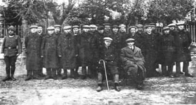
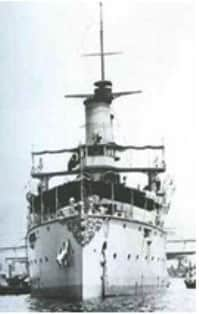
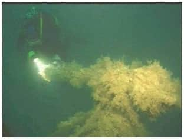
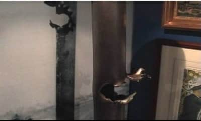

Ele geçirilen Turquoise Denizatlısından esir alınan mürettebat.
Çanakkale Boğazı’nı geçmeyi başaran tek Fransız denizaltısı olan Turquoise, 30 Ekim 1915 tarihinde, dönüş yolunda Çanakkale Boğazı’na girerken kıyıdan açılan topçu ateşiyle vurulur ve tüm mürettebatı esir alınır.
Turquoise; “Müstecip Onbaşı” adıyla 12.11.1919 tarihine kadar Türk donanmasında hizmet eder. Turquoise’ın Komutanı Yüzbaşı Ravanel’in teslim olurken imha etmediği gizli belgelerdeki randevu bilgilerini alan Alman UB-14 Denizaltısı, İngiliz E-20 Denizaltısı’na beş gün sonra Marmara’da pusu kurmuş ve batırmıştır. Denizaltı Komutanı Yüzbaşı Warren dâhil 9 denizci kurtarılmıştır. E-20; Marmara’da (27º 52’ 00’’ Doğu – 40º 48’ 50’’ Kuzey) koordinatlarında, 700 - 800 metre derinlikte yatmaktadır.
E-14
Nara’da karaya oturmuş olan Yavuz Zırhlısı’na karşı saldırıda bulunmak için İngiliz E-14 Denizaltısı, 28 Ocak 1918 tarihinde Boğaz’dan içeriye girer, Çanakkale Savaşı’nda Edward Boyle komutasındayken şöhret kazanmış bu denizaltı gemisi, bu defa G.S. White komutasında aradığı avı bulamaz ve geri dönüş yolunda Nara’da ağlara takılır, sualtı bombalarıyla yüzeye çıkmaya zorlanılır, daha sonra geri çekilirken Kumkale civarında karadan açılan topçu ateşiyle batırılır. Mürettebatından sadece 5 kişinin kurtulduğu, 27 kişinin öldüğü E-14 Denizaltısı enkazının aranmasına devam edilmektedir.
15 Eylül–23 Ekim 2005 tarihleri arasında TINA desteğiyle yapılan sualtı araştırmaları ve belgesel çekimlerinde, kendileri av olan 8 Müttefik denizaltısına ait yukarıdaki bulgular dışında, Çanakkale’de denizaltıların avladığı diğer bazı gemilerle de ilgili veriler toplanmıştır.
MESUDİYE

13 Aralık 1914 tarihinde Boğaz’daki mayın hatlarını korumak için Sarısığlar’da sabit bir batarya olarak demirliyken İngiliz B-11 Denizaltısı tarafından torpillenerek batırılan 1873 yılı Cenova/Ansaldo yapımı Mesudiye Gemisi’nin 10-12 metrelerdeki enkazına (gemi sökümünden sonra geriye kalan kalıntılarına) dalınarak sualtı film çekimi yapılmıştır. Mesudiye tarihimizde denizaltı tarafından batırılan ilk gemimizdir. 34 şehit verilen bu gemiden sağ kurtarılan 200 kadar denizciyle Boğaz’ın iki yakasında denizatlılara karşı ilk savunma-gözetleme hattı oluşturulmuştur.
MAJESTIC
27 Mayıs 1915 tarihinde Otto Hersing komutasındaki Alman U-21 Denizaltısı tarafından Seddülbahir açıklarında torpillenerek batırılan 1895 yılı yapımı 14.900 tonluk İngiliz Majestic Zırhlısı’na dalınarak sualtı film çekimi yapılmıştır. 40 denizcinin öldüğü Majestic, 25-30 metre derinlikte tamamen dağılmış olarak durmaktadır. 12 inch’lik top mermileri, kıç taret yuvası, köprü üstü, gemi direklerinin ve zırhlarının büyük bir kısmı sualtında görülebilmektedir. U-21, 25 Mayıs’ta da Kabatepe açıklarında 1903 yılı yapımı 11.895 tonluk İngiliz Triumph Savaş Gemisi’ni torpilleyip batırmıştı.
NURÜ’L-BAHİR

1898 yılı MacLaren & Wilson, Cenova–İtalyan yapımı gambot. Fas Sultanı tarafından sipariş edilen ve asıl adı Siriü’l-Türk olan 450 ton ağırlığında, 52 metre boyundaki gemi yapım aşamasındayken Osmanlı hükümetine devredildi. 1906 yılında Bahriye emrine verilen gemi 1913 yılında yedeğe çıktı. 1 Mayıs 1915’te E-14 tarafından torpillenmiş, 4 subay, 32 er şehit olmuştur. 29 denizci Zuhaf tarafından kurtarılmıştır. Şarköy açıklarında Selçuk Kolay ve Enes EDİS tarafından 2003 yılında 50 metre derinlikte bulunan batığa dalınarak ilk sualtı film çekimi yapılmıştır.
Sonuç:
Çanakkale Savaşları’nda batan 1 Avustralya (AE-2), 4 İngiliz (E-7, E-14, E-15, E-20) ve 3 Fransız (Saphir, Mariotte, Joule) denizaltısından kayıp olan sadece bir denizaltı kaldı. E-14, pek azı sağ olarak kurtulan mürettebatından 27’siyle birlikte Çanakkale Boğazı’nda yatıyor ve bulunmayı bekliyor.
Belgesel, bu denizaltılar ve savaştaki rolleriyle ilgili tarihsel bilgi vermek yanında, modern sualtı ekip ve ekipmanlarının kullanıldığı araştırmalarla denizaltıların keşfine tanıklık ediyor.

İngiltere Denizaltı Müzesi’nde sergilenen bu yaralı
periskopun hikayesi de belgeselde.